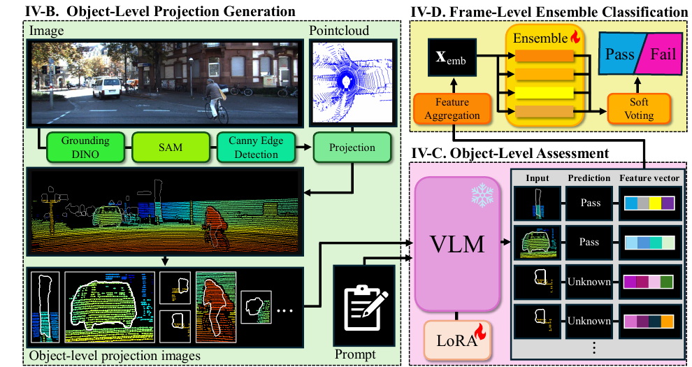
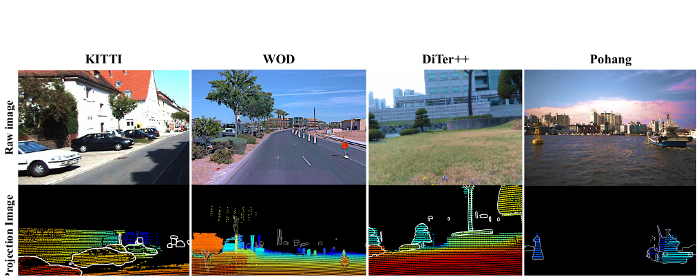

This paper extends introspective perception from downstream outputs to the sensor alignment underlying multi-sensor fusion. LiDAR–camera misalignment can corrupt fused representations even while both sensors operate normally. We formulate alignment integrity as an object-level visual assessment problem: projected LiDAR depth patterns are evaluated by a vision–language model using common human-defined criteria. The adapted VLM labels each object as Pass, Fail, or Unknown, and a soft-voting ensemble aggregates this evidence into a frame-level Pass/Fail decision. All task-specific training uses KITTI Odometry only, yet the method maintains comparatively consistent performance in unseen urban, lawn, and maritime environments without target-domain adaptation.

Grounding DINO detects open-set objects, SAM produces their masks, and Canny edges define object boundaries. LiDAR points are projected with depth-based colors. Local Z-buffering suppresses occluded background points using a 5-pixel neighborhood and a 0.7 m depth tolerance.
A LoRA-adapted Qwen2.5-VL-32B judges whether depth colors inside an object boundary are distinct from the surrounding region. It returns Pass for consistent alignment, Fail for mixed colors caused by misalignment, and Unknown when evidence is sparse or ambiguous.
Mean/max-pooled VLM embeddings, prediction statistics, and bounding-box geometry form a 143-dimensional feature. Logistic regression, random forest, Extra Trees, and histogram gradient boosting combine their probabilities by soft voting.

The VLM was fine-tuned on 8,546 augmented object projections derived from KITTI. Frame-level training used 660 KITTI frames. Evaluation covered KITTI sequence 00, Waymo Open Dataset, the DiTer++ lawn sequence, and the Pohang Canal maritime dataset, with no additional training or target-domain adaptation.
| Dataset | Environment | Pass / Fail Frames | Accuracy (%) | Balanced Accuracy (%) |
|---|---|---|---|---|
| KITTI | Urban | 160 / 240 | 89.50 | 90.21 |
| WOD | Urban | 30 / 45 | 76.00 | 70.00 |
| DiTer++ | Rural / lawn | 95 / 143 | 74.79 | 72.48 |
| Pohang | Maritime | 30 / 45 | 82.67 | 81.11 |
Across the three unseen datasets, the proposed method achieves 77.8% mean accuracy with a 3.5 percentage-point standard deviation, compared with ST-Calib's 66.8% and 14.1 points. Mean balanced accuracy is 74.5% versus 62.1%, supporting more stable transfer across environmental domains.
The current evaluation covers a limited number of datasets and primarily changes the environment while retaining similar sensor configurations. Because the approach relies on object-level projections, it cannot operate when no objects are present. Future work will extend evaluation to cross-sensor settings and add frame-level abstention when alignment evidence is insufficient.